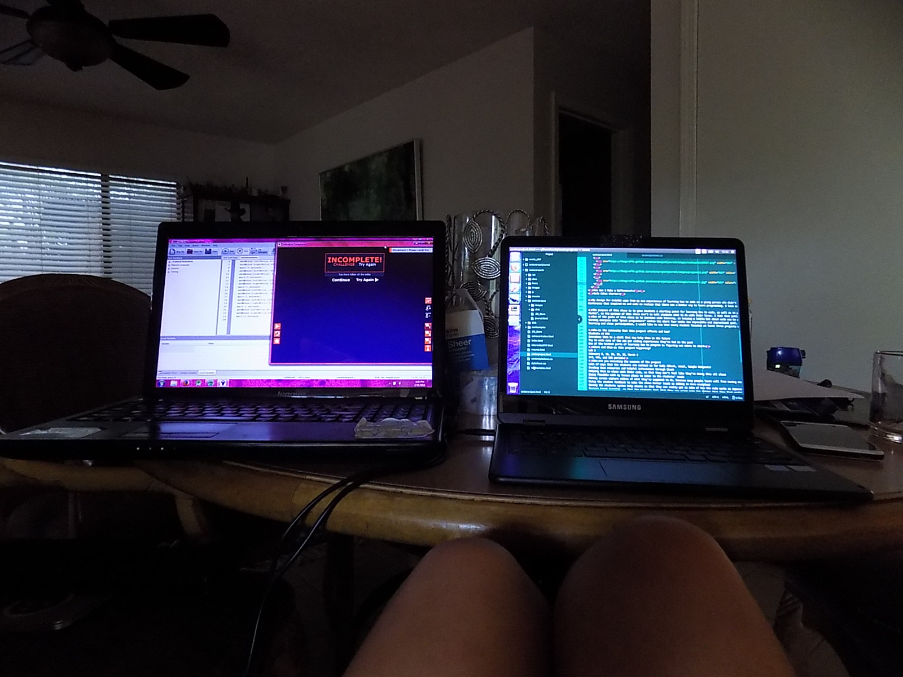
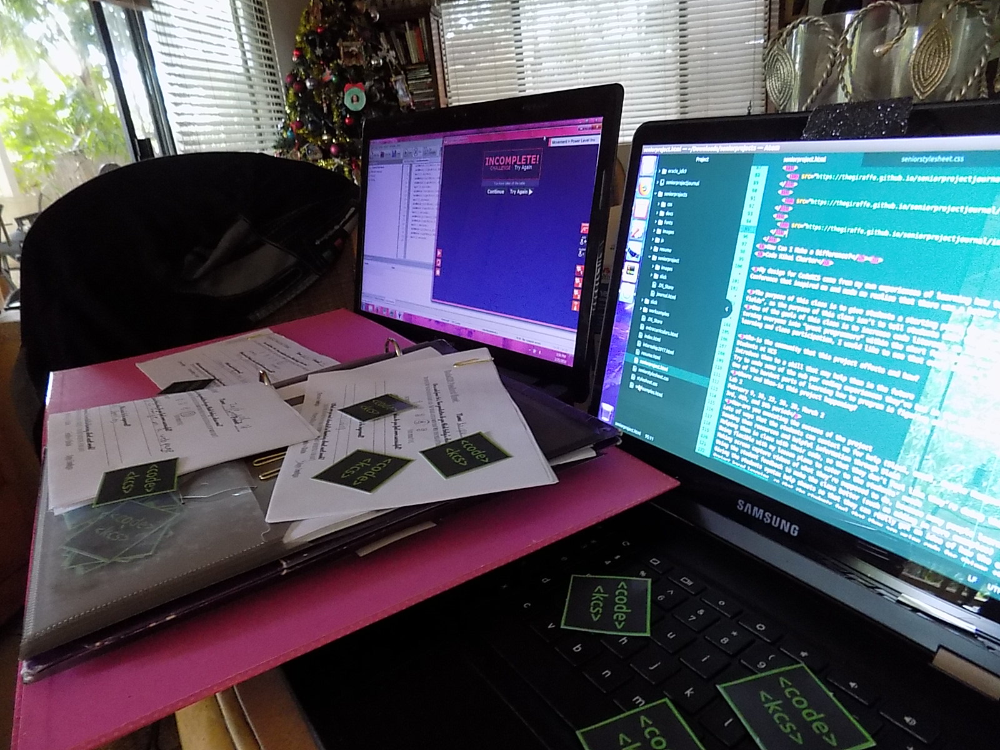

PROJECT JOURNAL
Blog 16: Update
25 Feb 2018

This week’s CodeKCS accomplishments and updates
- Taught the third CodeKCS class, to all three engineering periods on Friday.
- All CodeKCS classes got to use HTML, CSS, and git commands. They now all have their body text styled and images on their websites.
- Preparing for this coming week's dive into RobotC: Learning the RobotC environment and the RobotC Natural Language, which is a library that makes the code more intuitive. I believe that library is a good place to start, then the students will be able to transition into the slightly more complicated version of the language.
- Put together plans for the optional Code Day (after school this coming Thursday), which is a bit of a test run of the CodeKCS club and an opportunity for the students to get to try more creative stuff with code.
- Also put together ideas for a Google Hangouts session on Tuesday with students that were falling behind in the course or feel that they need help.
